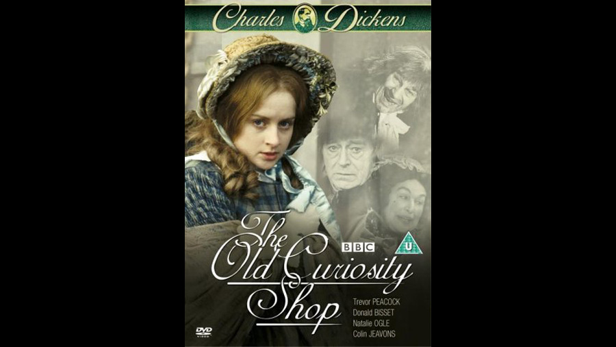

1979

CAST
Little Nell
-
Natalie Ogle
Grandfather Trent
-
Sebastian Shaw
Quilp
-
Trevor Peacock
Mrs. Quilp
-
Sandra Payne
Sampson Brass
-
Colin Jeavons
Sally Brass
-
Freda Dowie
Dick Swiveller
-
Granville Saxton
The Single Gentleman
-
Wensley Pithey
Kit Nubbles
-
Christopher Fairbank
Mrs. Nubbles
-
Patsy Byrne
Mrs. Jarley
-
Margaret Courtenay
Tom Scott
-
Colin Mayes
Tom Codlin
-
Anthony Pedley
Short Trotters
-
Bernard Stone
Mr. Marton, schoolmaster
-
Brian Oulton
Little Jacob
-
Simon Garstang
Servant
-
Annabelle Lanyon
Mr. Witherden
-
Laurence Hardy
Mr. Garland
-
Donald Bisset
Abel Garland
-
Keith Hazemore
Mrs. Garland
-
Pauline Winter
Mr. Slum
-
Peter Bland
Mrs. George
-
Daphne Anderson
George
-
James Marcus
Mrs. Jiniwin
-
Freda Jackson
Cardplayer
-
Hal Jeayes
Cardplayer
-
John Kearney
Miss Monflathers
-
Pauline Letts
Turnkey
-
Patrick Carter
Stilt Walker
-
Stuart Fell
Stilt Walker
-
Jimini Hignett
Gravedigger
-
Jimmy Gardner
Lady at Dinner Party
-
Audrey Leybourne
Vuffin
-
Tom Mennard
Grinder
-
Richard Merson
Jerry
-
Jerold Wells
Policeman
-
Derek Chafer
Landlady
-
Brenda Cowling
CREATIVE TEAM
Director
-
Julian Amyes
Screenplay
-
William Trevor
PRODUCTION
A 1979 BBC nine-part adaptation by Julian Amyes and William Trevor.